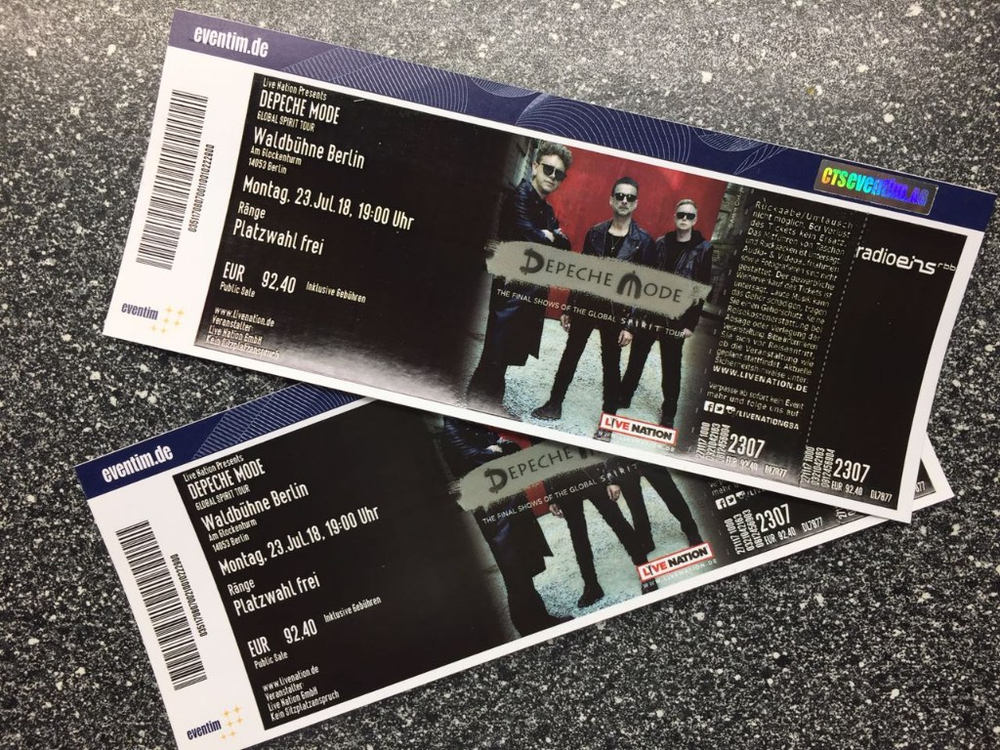

The Global Spirit Tour
DM started the Global Spirit Tour in May 2017 in Stockholm. In Germany there were several concerts. In Berlin originally only once was planned in the Berliner Olympiastadion, but there were announced two more concerts in January 2018 in the Mercedes-Benz Arena, and also two more concerts as the tour final in the Berliner Waldbühne, a famous and historical place in Berlin.
After announcing the two more concerts in Berlin as the final, both concerts were sold out in a few minutes after selling started!
So people are still very happy, that they have got tickets!
| Date | City | Place |
|---|---|---|
| Sa. 27. Mai 2017 | Leipzig | Festwiese |
| Mo. 05. Juni 2017 | Köln | RheinEnergieStadion |
| Fr. 09. Juni 2017 | München | Olympiastadion |
| Su. 11. Juni 2017 | Hannover | HDI Arena |
| Mo. 12. Juni 2017 | ||
| Tu. 20. Juni 2017 | Frankfurt | Commerzbank-Arena |
| Th. 22. Juni 2017 | Berlin | Olympiastadion |
| Tu. 04. Juli 2017 | Gelsenkirchen | Veltins Arena |
| Fr. 24. November 2017 | Frankfurt | Festhalle |
| Do. 11. Januar 2018 | Hamburg | Barclaycard Arena |
| Mo. 15. Januar 2018 | Köln | Lanxess Arena |
| We. 17. Januar 2018 | Berlin | Mercedes-Benz Arena |
| Fr. 19. Januar 2018 | ||
| Su. 21. Januar 2018 | Nürnberg | Arena Nürnberger Versicherung |
| Mo. 23.07.2018 | Berlin | Waldbühne |
| We. 25.07.2018 |
Setlist of the Global Spirit Tour
- Going Backwards
- So Much Love / Policy Of Truth
- Barrel of A Gun
- A Pain That I’m Used To
- Corrupt / Useless
- In Your Room (Album-Version)
- World In My Eyes / Precious
- Cover Me
- A Question of Lust / Shake The Disease / Judas / Strangelove (jew. Martin)
- Home (Martin)
- Poison Heart / Policy of Truth
- Where’s The Revolution
- Wrong
- Everything Counts
- Stripped
- Enjoy The Silence
- Never Let Me Down Again
- Somebody / Strangelove / Judas (jew. Martin)
- Walking In My Shoes
- Heroes (David-Bowie-Cover)
- I Feel You
- Personal Jesus
Main:
Encore: